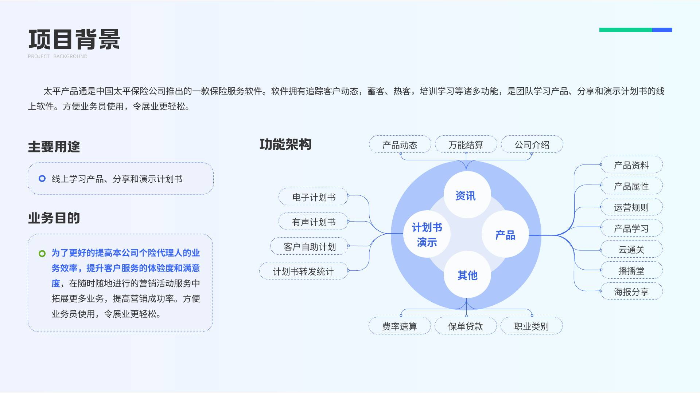
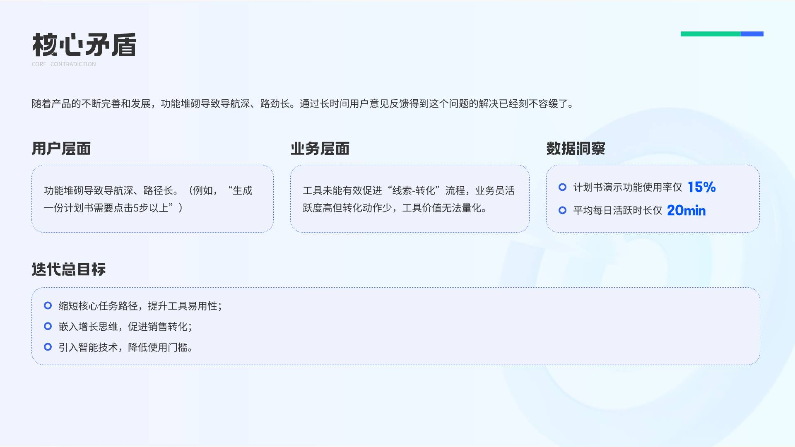

B端 · SaaS · 2025
智能供应链管理平台
设计职责
负责采购、仓储、物流三大模块的信息架构与交互设计，输出高保真原型与设计规范，主导可用性测试与开发走查。
重构采购、仓储、物流全链路工作流，日均操作效率提升 38%。
设计背景
客户为中型制造企业，原有 ERP 模块操作路径冗长，采购与仓储数据割裂，一线员工日均需在 4 个系统间切换完成入库登记。
产品团队计划打造统一的供应链中台，目标是在不改变现有业务规则的前提下，将核心操作收敛至单一工作台，降低培训与出错成本。
需求分析
通过 8 场用户访谈与 3 轮现场跟单，梳理出三类核心角色及其诉求：
- 采购员：快速创建采购单、跟踪到货状态、处理异常退单
- 仓管员：扫码入库、库存盘点、库位调拨，要求单手操作友好
- 物流调度：批量排车、在途追踪、异常预警，需大屏概览能力
设计思路
采用「角色工作台 + 全局搜索」的架构策略，登录后按权限直达专属首页，将高频操作控制在 3 步以内。
复杂表单拆分为步骤条 + 侧边摘要预览，状态变更使用统一的色彩语义（待处理 / 进行中 / 已完成 / 异常），确保跨模块认知一致。
核心设计展示

